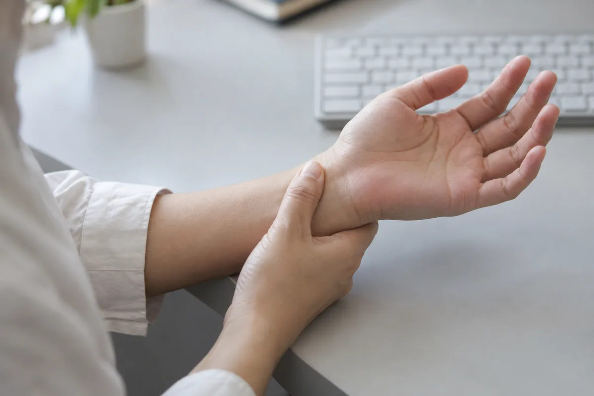
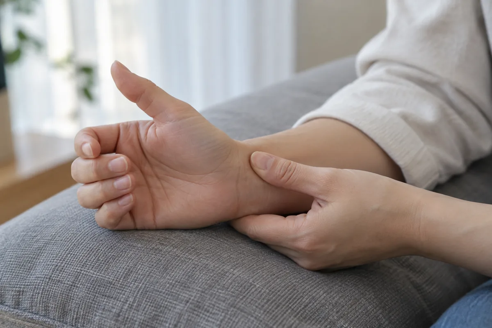
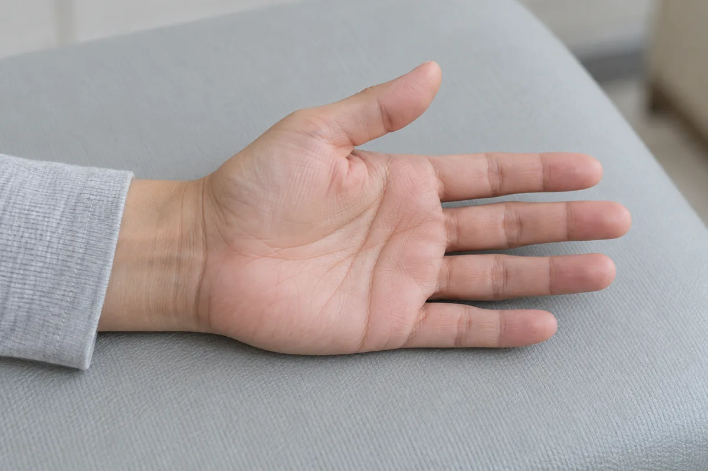
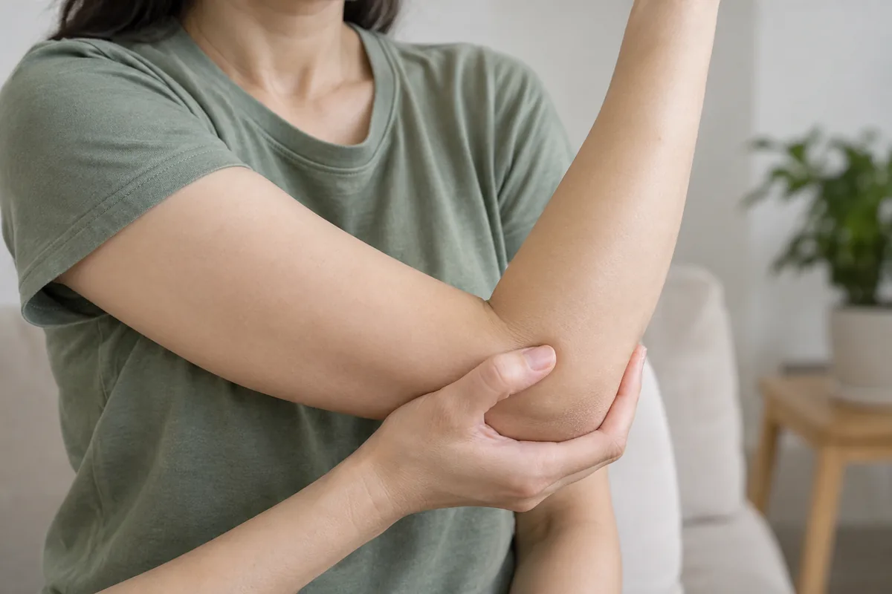

팔꿈치·손
팔꿈치와 손의 통증은 반복적인 사용뿐 아니라 힘줄의 자극이나 신경 압박 등과 관련될 수 있습니다. 물건을 쥐거나 손목을 돌릴 때의 통증, 손가락 저림과 움직임을 함께 확인합니다. 사용 습관과 진찰 결과를 바탕으로 부담을 줄일 방법과 치료 방향을 안내합니다.
통증의 위치와 움직임, 생활 습관을 함께 살핀 뒤 필요한 치료 방향을 안내합니다.
CONDITIONS
팔꿈치·손 주요 질환

손목터널증후군(수근관 증후군)
손목의 좁은 통로인 수근관에서 정중신경이 눌려 발생하는 질환입니다. 통로 안 조직의 부종과 손목 자세, 개인의 해부학적 특징 등이 함께 영향을 줄 수 있습니다. 손 저림의 분포와 엄지 근육의 힘을 살펴 다른 신경 질환과 구분합니다.
엄지와 검지, 중지 및 약지의 엄지 쪽이 저리거나 화끈거릴 수 있습니다. 밤에 증상이 심해 잠에서 깨거나 손을 털면 일시적으로 편해지기도 합니다. 감각이 둔해지고 단추를 잠그거나 작은 물건을 집는 동작이 어려워질 수 있습니다.

손목건초염(드퀘르벵 증후군)
엄지 쪽 손목을 지나는 힘줄과 이를 둘러싼 통로가 자극받아 통증이 생기는 질환입니다. 힘줄이 원활하게 움직이지 못하면서 마찰이 커질 수 있습니다. 엄지와 손목을 반복해 쓰는 동작에서 악화되기도 하며, 임신·출산 전후에도 나타날 수 있습니다.
엄지 아래쪽 손목이 아프고 붓거나, 엄지를 움직일 때 걸리는 느낌이 들 수 있습니다. 물건을 꽉 쥐고 비틀거나 아이를 들어 올리는 동작이 불편해지기도 합니다. 통증이 손목에서 팔 아래쪽으로 이어지는 경우도 있습니다.

방아쇠수지
손가락을 굽히는 힘줄이 두꺼워지거나 힘줄을 잡아주는 통로가 좁아져 움직임이 걸리는 질환입니다. 손가락을 반복해서 쥐는 활동과 관련될 수 있지만 원인이 뚜렷하지 않은 경우도 있습니다. 어느 손가락이 얼마나 걸리는지와 통증을 함께 확인합니다.
손가락을 굽혔다 펼 때 딸깍거리며 걸리고, 손바닥 쪽 손가락 뿌리가 아플 수 있습니다. 아침이나 오랫동안 손을 쓰지 않은 뒤 더 뻣뻣하게 느껴지기도 합니다. 심하면 굽힌 손가락이 잠겨 반대 손으로 펴야 하는 경우도 있습니다.

테니스 엘보 / 골프 엘보
팔꿈치에 붙는 힘줄이 반복적인 부하로 손상되어 통증이 생기는 상태입니다. 테니스 엘보는 주로 바깥쪽, 골프 엘보는 안쪽 힘줄에 발생합니다. 운동선수뿐 아니라 손목을 반복해 쓰거나 물건을 쥐는 작업이 많은 사람에게도 나타날 수 있습니다.
팔꿈치 안쪽 또는 바깥쪽을 누르면 아프고 손목을 쓰거나 물건을 쥘 때 통증이 커집니다. 컵을 들거나 문손잡이를 돌리는 동작도 불편할 수 있습니다. 통증 때문에 악력이 약해진 듯 느껴지며 반복 작업 후 증상이 두드러지기도 합니다.